Lulusan S1 Teknik Informatika (IPK 3.85 / 4.00) dengan pengalaman lapangan di Badan Pusat Statistik (BPS), pemetaan geospasial Wilkerstat, dan pengembangan sistem informasi web. Memiliki ketelitian tinggi, disiplin kuat terhadap SOP & K3/HSE, serta siap mendukung optimalisasi operasional pada sektor industri strategis nasional — meliputi energi, pertambangan, maupun perkebunan — di seluruh Indonesia.
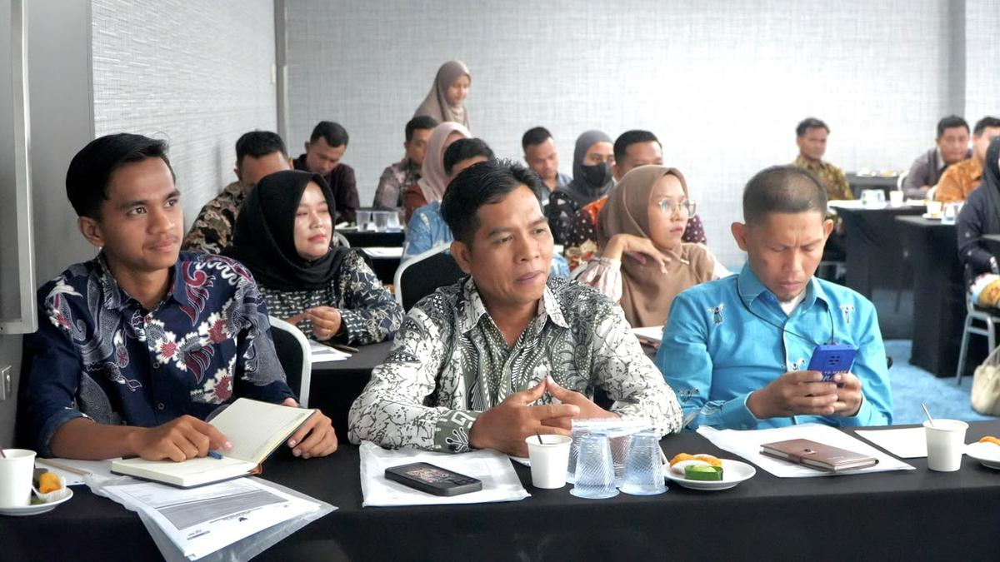
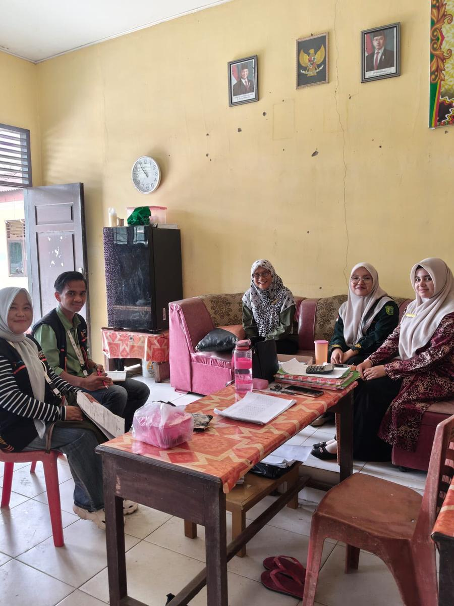
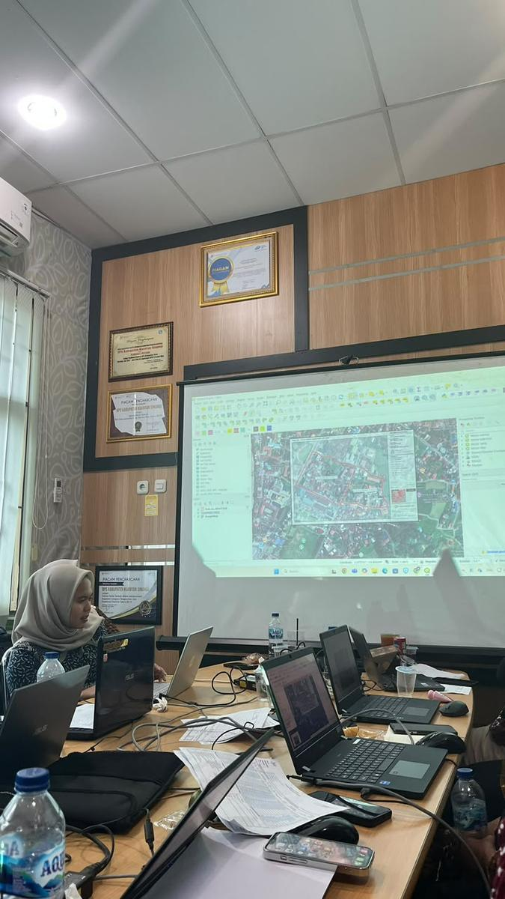
Saya Weldo Ravendra Hendri, S.Kom, lulusan S1 Teknik Informatika dari Universitas Islam Kuantan Singingi (UNIKS) dengan predikat Cumlaude (IPK 3.85 / 4.00). Fokus keahlian saya mengintegrasikan rekayasa perangkat lunak, perancangan database terstruktur, dan analisis data untuk mendukung efisiensi operasional.
Pengalaman saya ditempa melalui tugas nyata di garda terdepan sebagai Mitra Badan Pusat Statistik (BPS). Saya bertanggung jawab atas pendataan lapangan door-to-door, pemetaan geospasial Wilkerstat, pengolahan data survei skala besar, hingga verifikasi dan resolusi anomali data sesuai standar operasional yang ketat.
Selain itu, amanah kepemimpinan sebagai Petugas KPPS Pemilu 2024 dan Ketua Remaja Masjid Raudhatul Jannah membentuk ketelitian administratif, integritas tinggi, serta kemampuan komunikasi interpersonal yang kokoh. Saya memiliki kesiapan penuh dalam penerapan standar K3/HSE, kepatuhan tinggi terhadap SOP, serta kemampuan adaptasi lapangan yang prima untuk berkontribusi langsung pada sektor industri strategis nasional — baik di bidang energi & migas, pertambangan & sumber daya mineral, maupun perkebunan & agribisnis — di seluruh Indonesia.
Memahami pentingnya keselamatan kerja dan ketertiban administrasi.
Terbiasa bekerja mandiri maupun tim di lingkungan lapangan dinamis.
Keahlian komprehensif yang dirancang untuk mendukung operasional sektor industri strategis (energi, pertambangan, perkebunan), pengolahan data volume tinggi, dan infrastruktur sistem informasi.
Pengalaman memproses ribuan baris data survei lapangan, pembersihan data (data cleaning), deteksi anomali data, serta pembuatan laporan terstruktur menggunakan Microsoft Excel lanjutan.
Perancangan arsitektur sistem informasi dan manajemen database relasional yang andal. Mengembangkan aplikasi backend terintegrasi dengan alur bisnis yang rapi dan terdokumentasi.
Keahlian pemetaan wilayah kerja statistik BPS, digitasi peta batas blok sensus, pemutakhiran muatan wilayah, dan sinkronisasi data lapangan berbasis lokasi.
Tersertifikasi Cisco Networking Academy dalam konsep dasar jaringan komputer, konfigurasi perangkat, penanganan kendala teknis (troubleshooting), serta perakitan mikrokontroler.
Penyusunan berkas administrasi resmi, verifikasi dokumen, pencatatan arsip digital, dan penyusunan laporan operasional sesuai standard operating procedure (SOP).
Pengalaman memimpin organisasi pemuda, mengoordinasikan tim pelaksana di lapangan, memoderasi rapat, serta menjalin komunikasi harmonis dengan masyarakat dan pemangku kepentingan.
Pengalaman nyata yang membuktikan kedisiplinan, ketelitian dalam validasi data, serta kemampuan manajerial di lapangan.
Penerapan keilmuan teknologi informasi untuk memecahkan kendala operasional dan manajemen data.
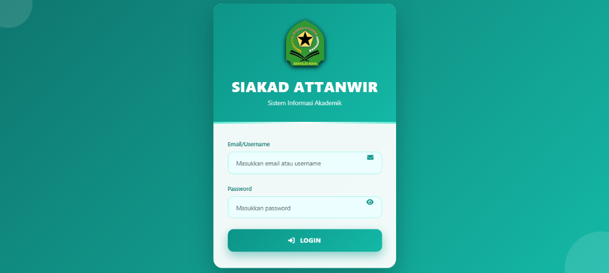
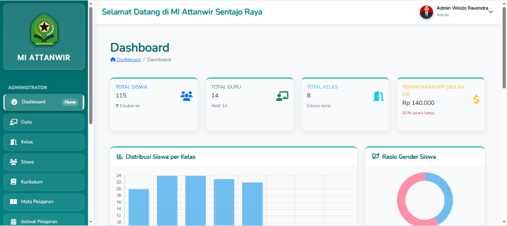
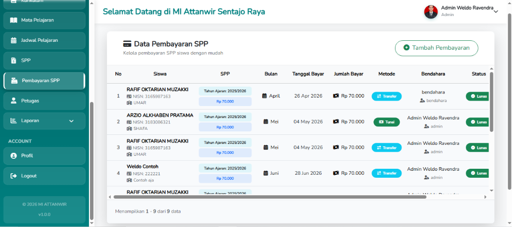
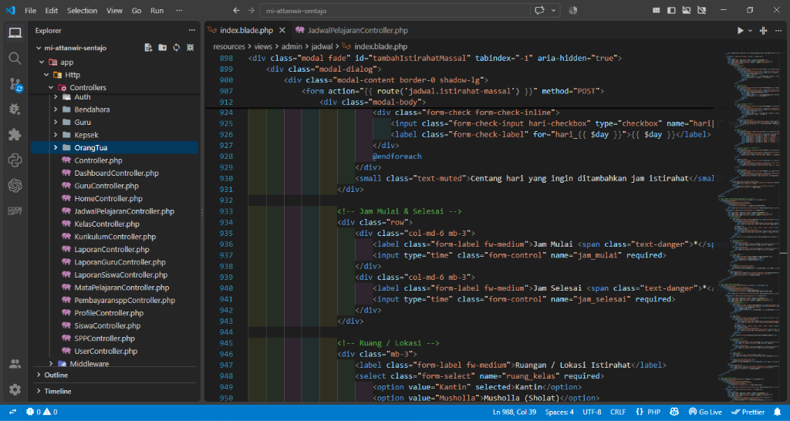
Geser untuk melihat foto lainnya ➔
Proyek Rekayasa Perangkat LunakProses administrasi akademik dan pelaporan pembayaran keuangan sebelumnya berjalan manual melalui berkas fisik, rawan keterlambatan validasi, duplikasi data, dan ketidaksinkronan saldo.
Merancang Entity Relationship Diagram (ERD), normalisasi skema basis data MySQL, mengembangkan antarmuka sistem dengan Laravel (PHP), menerapkan role-based access control, serta pengujian fungsional.
Sistem berhasil memangkas waktu verifikasi berkas, memusatkan rekapitulasi data pembayaran secara real-time, dan meminimalisir potensi human-error dalam pelaporan keuangan.
Data survei lapangan sensus nasional melibatkan ribuan entitas pelaku usaha dengan beragam kompleksitas indikator. Diperlukan validasi cepat dan akurat sebelum data dipublikasikan secara nasional.
Melakukan entri data digital melalui CAPI, menjalankan formula validasi silang pada Microsoft Excel, mendeteksi outlier dan data anomali, serta melakukan tindak lanjut verifikasi ke lokasi responden.
Kualitas dataset bersih (clean data) mencapai target kelayakan BPS tepat waktu tanpa kendala anomali kritis, mendukung keakuratan statistik ekonomi daerah.
Dokumentasi otentik kegiatan pendataan survei BPS, pemetaan geospasial Wilkerstat, pelatihan kompetensi, proyek teknis, serta aktivitas organisasi.
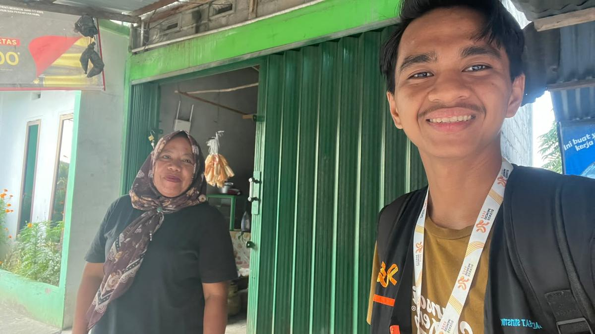
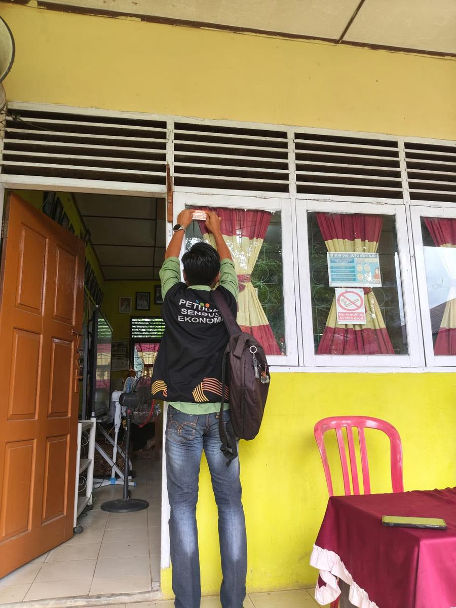
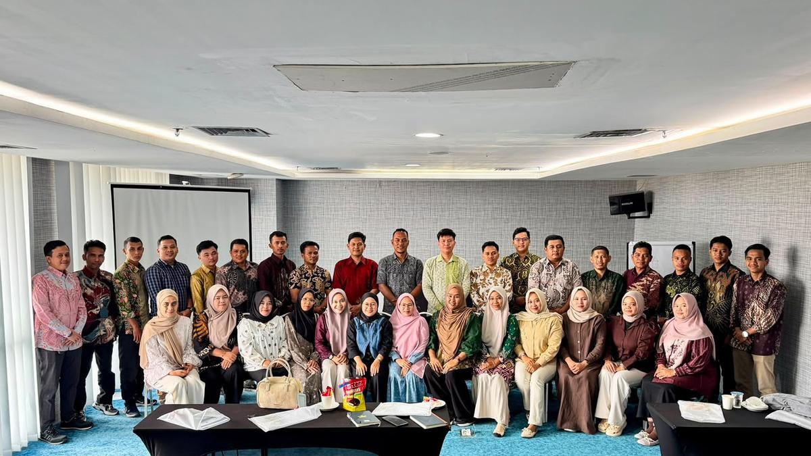
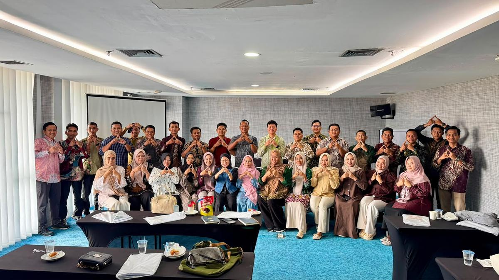
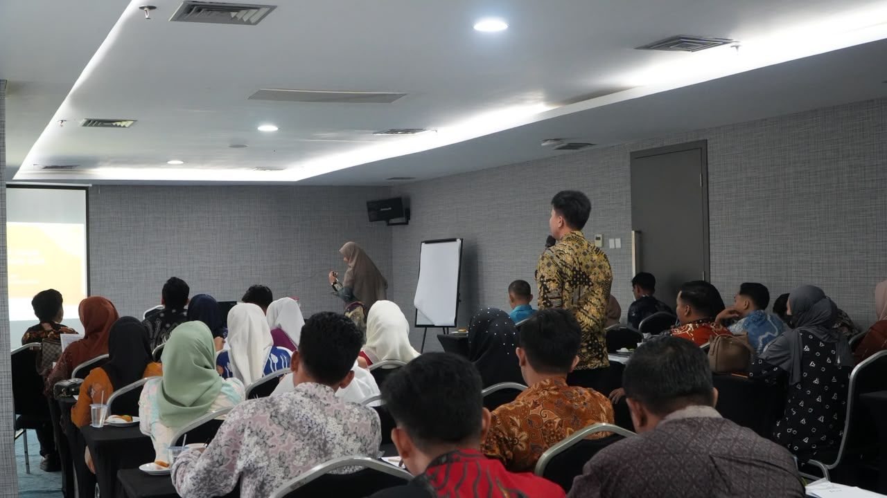
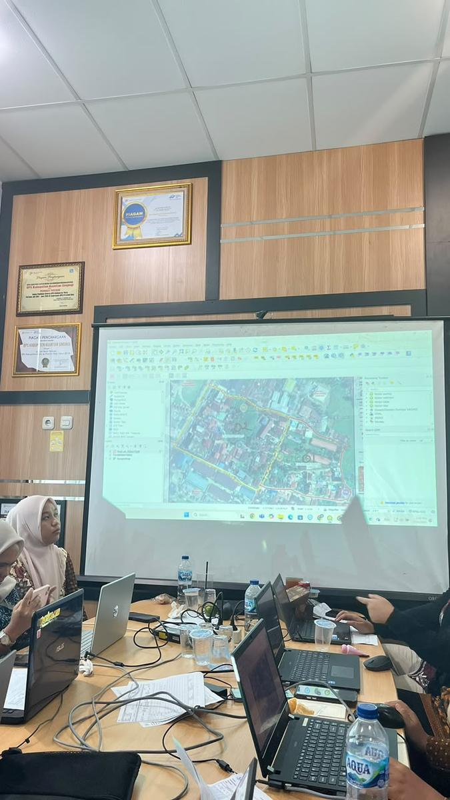
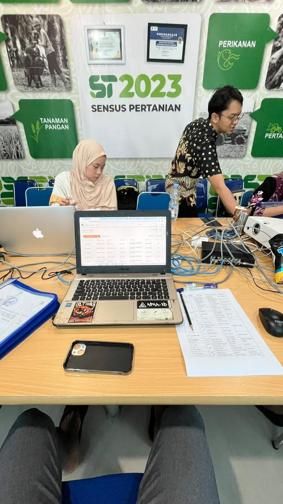
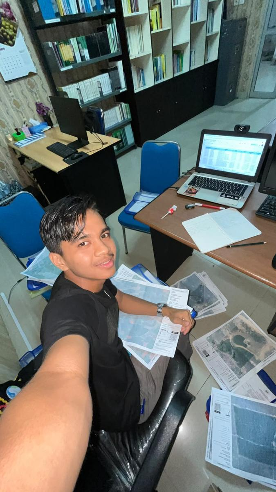
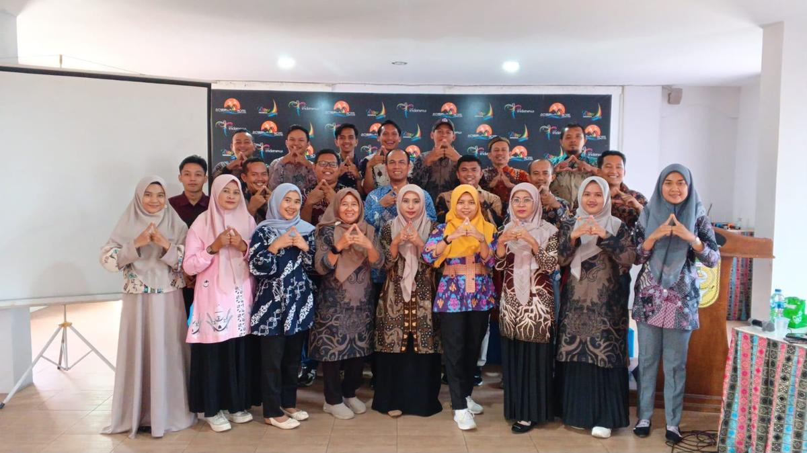
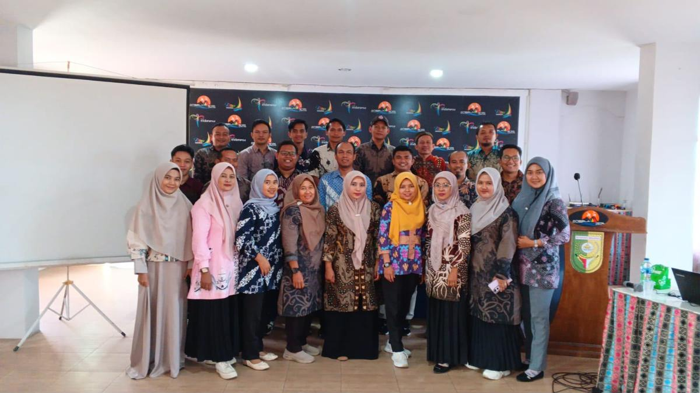
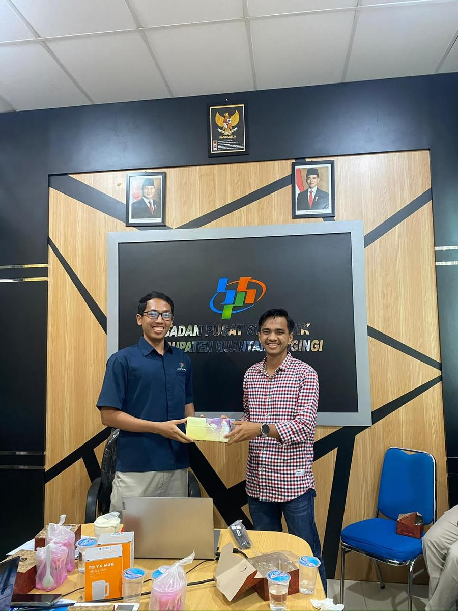
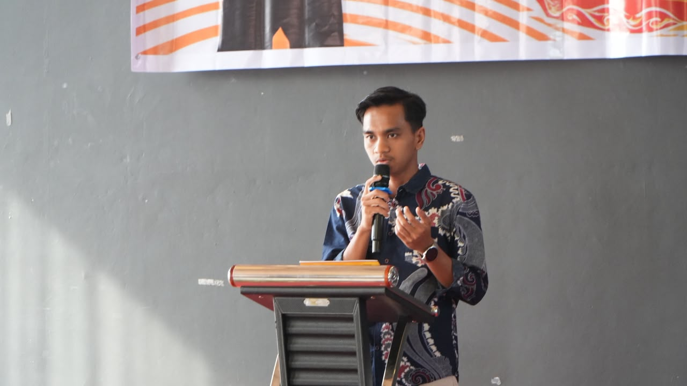
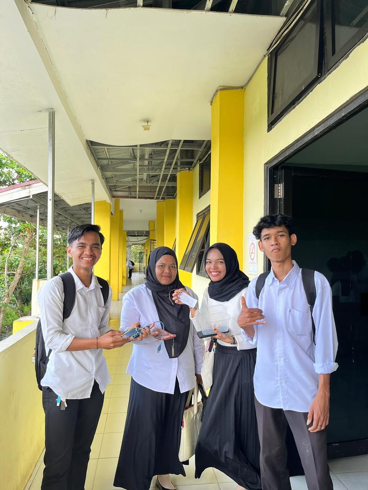
Lulus dengan IPK 3.85. Fokus pendalaman pada rekayasa perangkat lunak web, sistem manajemen basis data, analisis algoritma, pemodelan sistem informasi, dan teknologi jaringan.
Kompetensi Dasar Jaringan Komputer, Topologi & Protokol Komunikasi (2024)
Laboratorium Fakultas Teknik UNIKS (2023)
Laboratorium Fakultas Teknik UNIKS (2023)
Saya sangat terbuka untuk peluang posisi Management Trainee (MT), Officer Development Program (ODP), IT Staff, Database Administrator, Data Processing / Analyst, maupun posisi operasional di berbagai sektor industri strategis nasional — termasuk energi & migas, pertambangan & mineral, serta perkebunan & agribisnis.
Deskripsi detail kegiatan dan peran yang dijalankan.